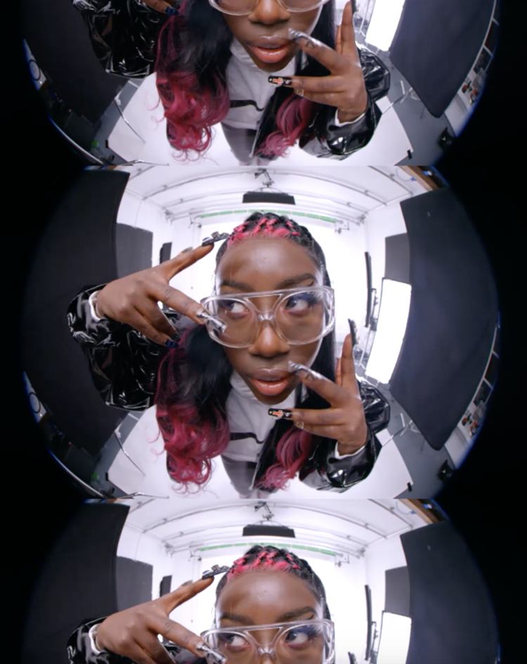
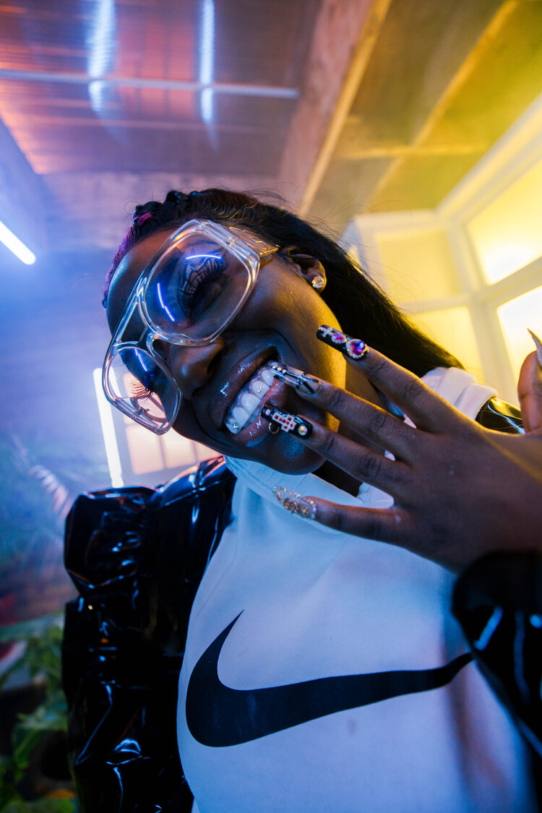
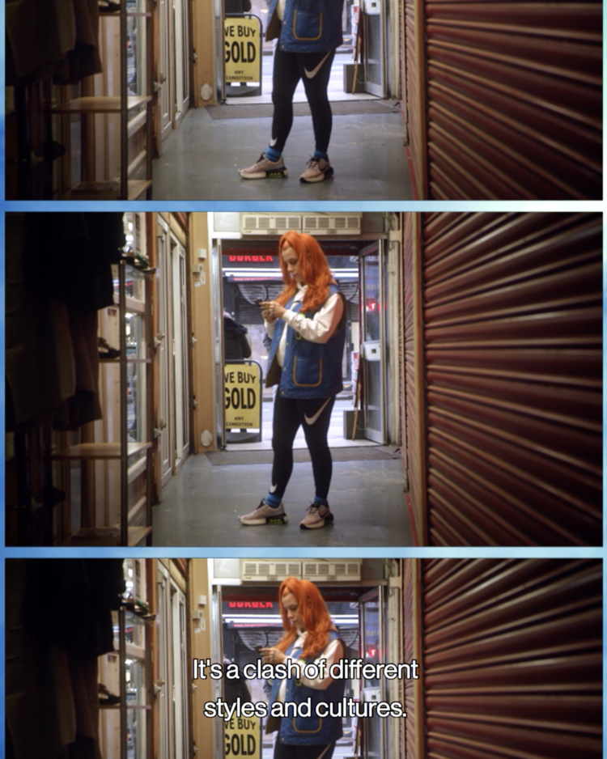
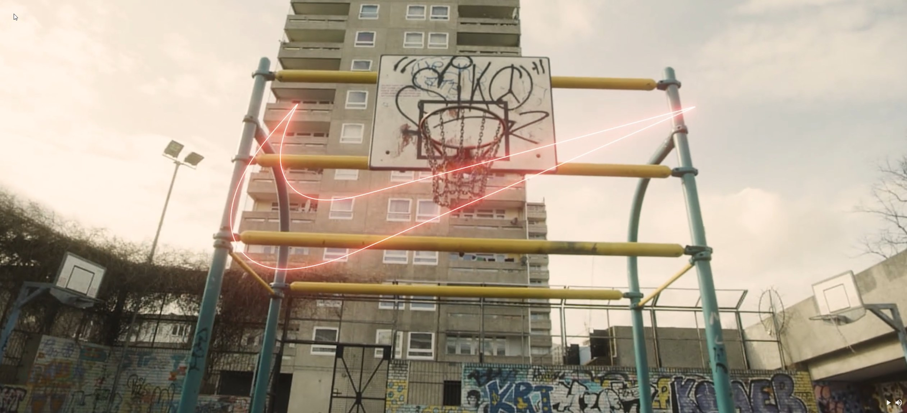

Nike ‘Verona Shoe Launch’ campaign.
Director / Design & Animation
Working with soulmates Lemonade Money, this was our second project with Nike, to help bring to life their ‘Future Is In The Air’ campaign.
We were briefed to create a selection of films highlighting young British creatives making a difference in their communities. We worked closely with Nike’s teams and music connections to deliver social friendly films, full GFX campaign, incorporating a variety of formats from stills to stop motion animation. All shot in our studio space in London Bridge.

Film 1 : The endocannabinoid system



